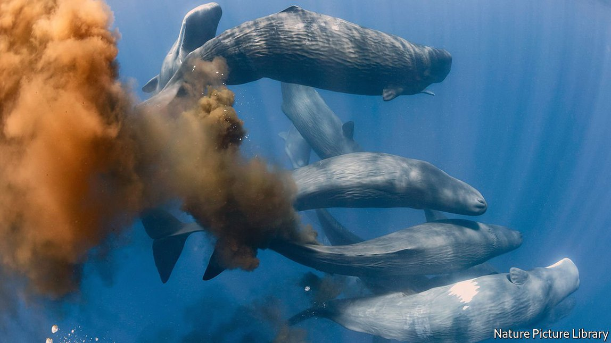
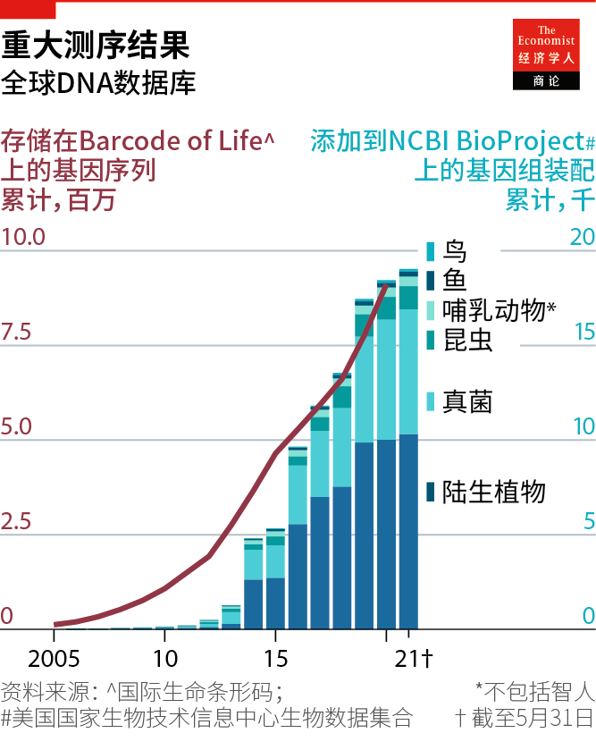
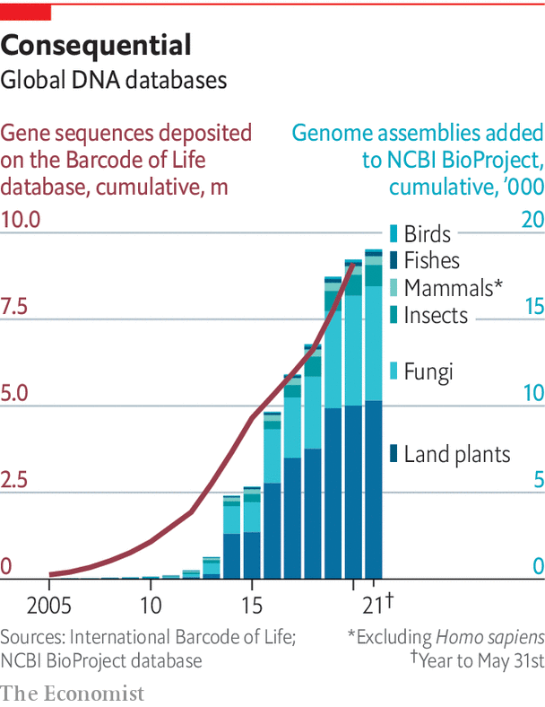

2021-07-01T06:29:03+00:00
破解密码
遗传物质测序是强大的生态保护工具
你可以从动物留下的粪便、皮肤细胞和其他痕迹中了解很多事【专题报道《保护生态多样性》系列之三】
二OOO年九、十月间，在澳大利亚的埃平森林国家公园（Epping Forest National Park）发现了几具北方毛鼻袋熊的尸体和一些肠道碎片，看起来应该是某种神秘捕食者干的好事。养牛业缩小了袋熊的自然栖息地，也因此导致它们数量减少。它们在1970年代一度减少到只剩二三十只，后来在土地管理政策的作用下，于本世纪初回升到100只左右。研究人员对从埃平森林的尸体中提取的DNA做了测序，确定它们是六雄一雌。但是，是什么东西一举杀死了已知袋熊数量的6%呢？
疑犯要么是澳洲野犬，要么是野狗，而谜底就包含在从公园收集的粪便中。一些粪便测出了与袋熊尸体相同的基因序列，它们是澳洲野犬留下的。研究小组验明了凶手身份。随后在2002年，埃平森林周围竖起了20公里长的防护栅栏。
随着DNA测序工具不断变得更小、更快也更便宜，环境DNA——也就是eDNA——日益成为保育生物学家和土地管理者常用的工具。该领域始于1980年代后期，当时微生物学家开始用这种方式寻找河流和沉积物中的细菌。在此之前，他们在培养皿上涂抹河水或泥沙来培养常驻微生物，然后在显微镜下观察这些菌落的形状或被染料染色时如何反应来识别它们。这个过程冗长且容易出错。相比之下，从样本中提取DNA并将其基因序列与资料库做比对的方法更快也更可靠。
生态学家在本世纪初期采纳和发展了这一方法，当时他们已经意识到自己研究的动物不断地在粪便、唾液、血液、鳞片和脱落的组织中遗留下DNA。收集这些材料并对其测序提供了有价值的信息，而无需与动物本身互动。这种方法在早期尤其受到研究淡水系统的研究人员的青睐。只需简单地把一根试管浸到溪流中，他们就可以查明目标物种是否存在，甚至数量多少。
在开始测序前，研究人员可以使用名为聚合酶链反应的方法（PCR，在新冠病毒检测中也用到这种方法）来扩增痕量DNA，所以eDNA调研可以检测到调研场所中数量很少的物种。这就提供了一种有用的工具来追踪稀有物种，或在入侵物种对渔业造成严重破坏前就发现它们。其他研究已经在寻找证据去证明从养鱼场逃脱的鱼正与野生种群交配，可能会逐渐削弱野生鱼类。
根据野生动物粪便中的DNA就可以绘制出其食物链，而无需捕杀动物来查看它们肚肠里有什么。杀死大型或稀有物种，比如鲸鱼，即使是出于保护的目的，也会带来伦理和实践上的挑战。但鲸鱼的粪便有一个巨大的优点就是能漂浮。在训练有素的狗的帮助下——它们可以嗅出一系列濒危物种粪便的标志性气味——人们就更容易找到汪洋大海中漂浮的这些鲸鱼粪便了。分析打捞到的粪便中的DNA可以确定鲸鱼吃了什么，或者肠道中有什么细菌。
在陆地上，研究人员可以用粪便、尿液或头发中的eDNA来观察种群间的互动。马来西亚一个进行中的项目关注在森林砍伐导致马来亚虎的栖息地支离破碎后，它们的亚种群是否仍存在联系。在英国，eDNA被用于监测一种受保护的蝾螈。其他项目已开始表明，有时雪地脚印中遗留的细胞带有足够多的DNA来识别物种，可能还能识别性别。
几个团体正试图从足迹DNA中识别属于同一种群的所有个体，这将带来种群监测的革命，帮助追踪在广阔地区漫游的动物而不需要用到无线电标签，也可帮助制定可持续的狩猎配额。美国林务局的研究人员正在对狼做这种尝试。
所谓的“宏基因组学”研究使用eDNA来绘制如珊瑚礁这样的一整个群落的基因构成，或存活在地壳深处、基本上未经探索的广大细菌群落——这个群落的生物量比所有动物的总和还大一个数量级。此类研究可以提供可能需要很多年实地考察才能建立的基因快照。
这个领域正在迅速发展，但也存在挑战。有时很难判断eDNA是何时留下的。在河流中某处采样的DNA可能来自上游任何地方。而物种识别环节的表现又取决于作为对照物的物种特异性遗传条形码，及参考基因组本身的质量。这触发了一系列研究项目，要么是为每个物种确定独一无二的遗传特征——例如国际生命条形码（International Barcode of Life），要么对尽可能多的物种做全基因组测序（见图表）。耗资47亿美元的地球生物基因组计划（Earth Biogenome Project）的目标是在十年内完成150万个物种的测序。除了收集和保存基因组外，此类基因数据库还可用于挖掘有关疾病易感性或潜在药物的信息。
但是，尽管自20世纪后期以来基因测序的成本已经大幅下降，对于美国、欧洲和中国以外的大多数研究人员来说它仍然昂贵得令人却步。不过，测序技术正在迅速改进。尤其是英国公司牛津纳米孔（Oxford Nanopore）开发了一种便携技术可以现场测序，而不是仅仅在实验室中测序。在这种纳米孔测序技术中，一条条DNA链被引导穿过生物膜上的纳米级小孔。DNA字母表中的四个字母在穿过这个孔时都会产生不同的电信号，从而可以实时读取序列。
牛津纳米孔公司的Min ION是一种USB供电的袖珍设备，让测序过程的每一步都能在取样现场完成。它在一小时内给出序列。这些设备相对来说不算昂贵——约1000美元起步，但需要后续充电才能给更多样本测序。它们已被用于对巴西的病毒、坦桑尼亚的两栖动物DNA以及国际空间站上的细菌测序。
这项技术还为调查和执法开辟了新的可能性。实地基因测序可用于识别非法捕获的野味和鱼类或走私象牙的特征和源头。今年3月发表在《国际法医学：遗传学》（Forensic Science International: Genetics）上的一篇论文将Min ION测得的结果与在野生动物法医学中使用的标准测序法做比对。它发现结果具有可比性，这可能为在野生动物犯罪起诉中采用手持设备铺平了道路。
2021-07-01T06:29:03+00:00
Cracking the code
The sequencing of genetic material is a powerful conservation tool
You can learn a lot from the faeces, skin cells and other traces that animals leave behind
IN SEPTEMBER AND October 2000, the carcasses of several northern hairy-nosed wombats and some fragments of intestine were discovered in Australia’s Epping Forest National Park, apparently left behind by a mystery predator. Cattle farming has shrunk the wombats’ natural habitat and consequently their population, which reached a low of just 20-30 animals in the 1970s before land-management policies helped push numbers back up to roughly 100 in the early 2000s. By sequencing DNA extracted from the Epping Forest remains, researchers identified six males and one female. But what had slain 6% of the known wombat population?
Suspicion fell on either dingoes or wild dogs, and the final answer came packaged inside faeces collected in the park. Some yielded the same genetic sequences as the carcasses. They had been left by dingoes. The team had identified their killers, and in 2002 a 20km protective fence was put up around the forest.
Environmental DNA, or eDNA, has emerged as an increasingly popular tool among conservation biologists and land managers, as DNA-sequencing tools have become progressively smaller, faster and cheaper. The field began in the late 1980s, when microbiologists started using it to look for bacteria in rivers and sediment. This had previously involved smearing water or dirt on Petri dishes to grow colonies of the resident microbes and then identifying them under the microscope, based on the shape of the colonies or how they responded to being stained with dye. It was lengthy and error-prone. Extracting DNA from samples instead, and comparing their genetic sequence to reference libraries, was quicker and more reliable.
The same approach was adopted and built upon in the early 2000s by ecologists, who were aware that the animals they studied were constantly shedding DNA in faeces, saliva, blood, scales and sloughed tissue. Gathering and sequencing this material provided valuable information without needing to interact with the animals themselves. The approach found particular favour early on with researchers studying freshwater systems. By simply dipping a test tube into a stream, they could find out if a target species was present and even how abundant it was.
Because trace amounts of DNA can be amplified before sequencing using a method called polymerase chain reaction (PCR, the same method used to detect SARS-CoV-2 in coronavirus testing), eDNA studies can detect species present in low numbers—a useful tool for tracking down rare species, or spotting invasive ones before they wreak havoc on a fishery. Other studies have sought evidence that escapees from fish farms were mating with wild populations, potentially eroding them.
DNA from scat, as wild animal droppings are known, can map out food chains without having to capture and kill animals in order to examine the contents of their guts. Killing large or rare species like whales, even for conservation purposes, poses ethical and practical challenges. But whale scat has the great advantage of buoyancy. Finding a turd floating in the middle of the ocean is made easier with the help of dogs that are trained to sniff out the signature smells of excrement belonging to a range of endangered species. DNA in the netted excrement can be analysed to determine what the animal ate, or what bacteria live in its gut.
On land, researchers can use eDNA from faeces, urine or hair to see how populations are interacting. In Malaysia, an ongoing project is focused on whether sub-populations of the Malayan tiger are still connected when deforestation has fragmented their habitat. In Britain eDNA is used to monitor a protected newt. Other projects have begun to show that cells left in footprints in snow can yield enough DNA to identify species and possibly sex.
Several groups are attempting to identify all the individuals belonging to a population from footprint DNA, which would transform monitoring of populations, help with the tracking of animals as they roam across wide areas without the need for radiotags, and setting sustainable hunting quotas. Researchers at the US Forest Service are trying this with wolves.
So-called “metagenomic” studies use eDNA to map the genetic make-up of entire communities, such as coral reefs, or the vast, largely unexplored bacterial community that lives deep inside the Earth’s crust and whose biomass is an order of magnitude greater than that of all animals combined. Such studies can offer a genetic snapshot that might take years of field studies to establish.
The field is booming, but there are challenges. It can be difficult to tell when eDNA was deposited. DNA sampled at one point in a river could have come from anywhere upstream. And species identification is only as good as the species-specific genetic barcodes and reference genomes that serve as points of comparison. This has spurred a rush of projects to either identify a unique genetic signature for every species, such as the International Barcode of Life, or sequence the whole genomes of as many species as possible (see chart). The $4.7bn Earth Biogenome Project aims to sequence 1.5m species in ten years. As well as collecting and preserving genomes, such genetic databases can be mined for information on susceptibility to disease, or for potential medicines.
But even though genetic sequencing has become much cheaper since the late 20th century, it remains prohibitively expensive for most researchers outside America, Europe and China. Sequencing technologies are improving rapidly, however. In particular, Oxford Nanopore, a British company, has developed portable technology that allows sequencing to be done in the field, not just in the lab. It relies on nanopore sequencing, a technique in which strands of DNA are drawn through a nanometre-sized pore in a biological membrane. Each of the four letters of the DNA alphabet produces a distinct electrical signal as it passes through the pore, allowing the sequence to be read in real time.
Oxford Nanopore’s Min ION, a USB-powered, pocket-sized device, allows every part of the sequencing process to be done in the field. Sequences are produced within an hour. The devices are relatively affordable: prices start at around $1,000, though subsequent recharges are needed to run more samples. They have been used to sequence viruses in Brazil, amphibian DNA in Tanzania and bacteria on the International Space Station.
The technology also opens up new possibilities for investigation and enforcement. Genetic sequencing in the field can be used to identify the nature and origin of illegal bushmeat, fish or smuggled ivory. A paper published in Forensic Science International: Genetics in March 2021 compared results obtained by the Min ION with the standard sequencing methods used in wildlife forensics. It found the results to be comparable, potentially paving the way for handheld devices to be used in wildlife-crime prosecutions. ■
2021-07-01T06:29:03+00:00
破解密碼
遺傳物質測序是強大的生態保護工具
你可以從動物留下的糞便、皮膚細胞和其他痕迹中了解很多事【專題報道《保護生態多樣性》系列之三】
二OOO年九、十月間，在澳大利亞的埃平森林國家公園（Epping Forest National Park）發現了幾具北方毛鼻袋熊的屍體和一些腸道碎片，看起來應該是某種神秘捕食者乾的好事。養牛業縮小了袋熊的自然棲息地，也因此導致它們數量減少。它們在1970年代一度減少到只剩二三十隻，後來在土地管理政策的作用下，於本世紀初回升到100隻左右。研究人員對從埃平森林的屍體中提取的DNA做了測序，確定它們是六雄一雌。但是，是什麼東西一舉殺死了已知袋熊數量的6%呢？
疑犯要麼是澳洲野犬，要麼是野狗，而謎底就包含在從公園收集的糞便中。一些糞便測出了與袋熊屍體相同的基因序列，它們是澳洲野犬留下的。研究小組驗明了兇手身份。隨後在2002年，埃平森林周圍豎起了20公里長的防護柵欄。
隨着DNA測序工具不斷變得更小、更快也更便宜，環境DNA——也就是eDNA——日益成為保育生物學家和土地管理者常用的工具。該領域始於1980年代後期，當時微生物學家開始用這種方式尋找河流和沉積物中的細菌。在此之前，他們在培養皿上塗抹河水或泥沙來培養常駐微生物，然後在顯微鏡下觀察這些菌落的形狀或被染料染色時如何反應來識別它們。這個過程冗長且容易出錯。相比之下，從樣本中提取DNA並將其基因序列與資料庫做比對的方法更快也更可靠。
生態學家在本世紀初期採納和發展了這一方法，當時他們已經意識到自己研究的動物不斷地在糞便、唾液、血液、鱗片和脫落的組織中遺留下DNA。收集這些材料並對其測序提供了有價值的信息，而無需與動物本身互動。這種方法在早期尤其受到研究淡水系統的研究人員的青睞。只需簡單地把一根試管浸到溪流中，他們就可以查明目標物種是否存在，甚至數量多少。
在開始測序前，研究人員可以使用名為聚合酶鏈反應的方法（PCR，在新冠病毒檢測中也用到這種方法）來擴增痕量DNA，所以eDNA調研可以檢測到調研場所中數量很少的物種。這就提供了一種有用的工具來追蹤稀有物種，或在入侵物種對漁業造成嚴重破壞前就發現它們。其他研究已經在尋找證據去證明從養魚場逃脫的魚正與野生種群交配，可能會逐漸削弱野生魚類。
根據野生動物糞便中的DNA就可以繪製出其食物鏈，而無需捕殺動物來查看它們肚腸里有什麼。殺死大型或稀有物種，比如鯨魚，即使是出於保護的目的，也會帶來倫理和實踐上的挑戰。但鯨魚的糞便有一個巨大的優點就是能漂浮。在訓練有素的狗的幫助下——它們可以嗅出一系列瀕危物種糞便的標誌性氣味——人們就更容易找到汪洋大海中漂浮的這些鯨魚糞便了。分析打撈到的糞便中的DNA可以確定鯨魚吃了什麼，或者腸道中有什麼細菌。
在陸地上，研究人員可以用糞便、尿液或頭髮中的eDNA來觀察種群間的互動。馬來西亞一個進行中的項目關注在森林砍伐導致馬來亞虎的棲息地支離破碎後，它們的亞種群是否仍存在聯繫。在英國，eDNA被用於監測一種受保護的蠑螈。其他項目已開始表明，有時雪地腳印中遺留的細胞帶有足夠多的DNA來識別物種，可能還能識別性別。
幾個團體正試圖從足跡DNA中識別屬於同一種群的所有個體，這將帶來種群監測的革命，幫助追蹤在廣闊地區漫遊的動物而不需要用到無線電標籤，也可幫助制定可持續的狩獵配額。美國林務局的研究人員正在對狼做這種嘗試。
所謂的“宏基因組學”研究使用eDNA來繪製如珊瑚礁這樣的一整個群落的基因構成，或存活在地殼深處、基本上未經探索的廣大細菌群落——這個群落的生物量比所有動物的總和還大一個數量級。此類研究可以提供可能需要很多年實地考察才能建立的基因快照。
這個領域正在迅速發展，但也存在挑戰。有時很難判斷eDNA是何時留下的。在河流中某處採樣的DNA可能來自上游任何地方。而物種識別環節的表現又取決於作為對照物的物種特異性遺傳條形碼，及參考基因組本身的質量。這觸發了一系列研究項目，要麼是為每個物種確定獨一無二的遺傳特徵——例如國際生命條形碼（International Barcode of Life），要麼對儘可能多的物種做全基因組測序（見圖表）。耗資47億美元的地球生物基因組計劃（Earth Biogenome Project）的目標是在十年內完成150萬個物種的測序。除了收集和保存基因組外，此類基因數據庫還可用於挖掘有關疾病易感性或潛在藥物的信息。
但是，儘管自20世紀後期以來基因測序的成本已經大幅下降，對於美國、歐洲和中國以外的大多數研究人員來說它仍然昂貴得令人卻步。不過，測序技術正在迅速改進。尤其是英國公司牛津納米孔（Oxford Nanopore）開發了一種便攜技術可以現場測序，而不是僅僅在實驗室中測序。在這種納米孔測序技術中，一條條DNA鏈被引導穿過生物膜上的納米級小孔。DNA字母表中的四個字母在穿過這個孔時都會產生不同的電信號，從而可以實時讀取序列。
牛津納米孔公司的Min ION是一種USB供電的袖珍設備，讓測序過程的每一步都能在取樣現場完成。它在一小時內給出序列。這些設備相對來說不算昂貴——約1000美元起步，但需要後續充電才能給更多樣本測序。它們已被用於對巴西的病毒、坦桑尼亞的兩棲動物DNA以及國際空間站上的細菌測序。
這項技術還為調查和執法開闢了新的可能性。實地基因測序可用於識別非法捕獲的野味和魚類或走私象牙的特徵和源頭。今年3月發表在《國際法醫學：遺傳學》（Forensic Science International: Genetics）上的一篇論文將Min ION測得的結果與在野生動物法醫學中使用的標準測序法做比對。它發現結果具有可比性，這可能為在野生動物犯罪起訴中採用手持設備鋪平了道路。